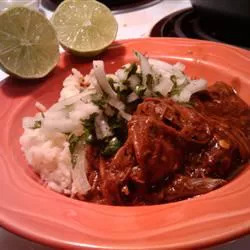

Mole

Description
An authentic Mexican dish - chicken slow cooked in a delectable sauce of chiles with a rich, never overpowering, chocolate background. Wonderful served with warm corn tortillas, rice and beans. Plan to have quite a mess to clean up afterward!
Ingredients
- 4 dried mulato chiles
- 4 dried ancho chiles
- 4 dried guajillo chiles
- 4 dried pasilla chilies
- 2 teaspoons lard, or more as needed
- 1 large onion, peeled and chopped
- 4 cloves garlic, chopped
- 1 (7 inch) flour tortilla
- 2 (5 inch) corn tortillas
- 1 plantain, peeled and chopped
- ½ cup almonds
- ½ cup peanuts
- ⅛ cup sesame seeds
- 1 (14 ounce) can whole peeled tomatoes
- 1 tablet of Mexican chocolate, such as Abuelita or Ibarra
- 1 whole chicken
Steps
- Remove the stems, veins and seeds from the chiles (you might want to wear gloves when you do this). Heat the lard in a heavy skillet over medium heat. Add the chiles, and cook and stir until the chiles are fragrant, about 1 minute, being careful not to burn them. Remove the chiles and place them in a large bowl.
- Stir in the onion and garlic, and cook until the onion is soft and translucent, about 5 minutes. Remove and add to the bowl with the chiles.
- Break the flour and corn tortillas into pieces, and add them to the skillet. Toast on both sides, turning often, until golden brown, about 3 minutes. Remove; add to the bowl.
- If needed, melt a small amount of additional lard in the skillet. Add the plantain pieces to the skillet, and cook and stir until lightly browned, about 5 minutes. Remove plantain; add to the bowl.
- Stir the almonds and peanuts into the skillet, and cook and stir until fragrant, about 1 minute. Sprinkle in the sesame seeds and continue cooking until sesame seeds are lightly browned, 15-30 seconds. Remove; add to the bowl.
- Warm the tomatoes over medium heat in the skillet until heated through, about 5 minutes. Remove from heat. Break the chocolate into chunks and stir into the tomatoes until melted. Pour the chocolate and tomato mixture into the bowl with the chile mixture; stir to combine.
- Working in small batches, puree the mixture in a blender until smooth, adding a small amount of water if needed to make a smooth sauce.
- Place the chicken into a large Dutch oven; pour the sauce over the chicken. Cover and simmer over medium low heat until the chicken falls off the bone, 2-3 hours.
Main Page